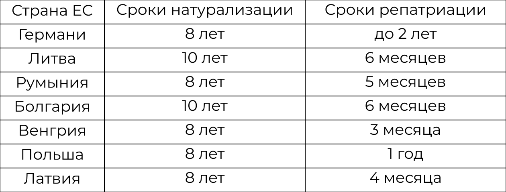

Гражданство ЕС — это дополнительный правовой статус владельцев паспортов любой из 27 стран Европейского союза, регулируемый положениями Маастрихтского договора 1992 года. Каждый, кто оформляет паспорт одного из государств ЕС, получает привилегии при обустройстве жизни в Европе. Гражданство Евросоюза уравнивает владельца в правах с другими европейцами, не заменяя национальный статус.
Паспорт ЕС — это удостоверение личности граждан стран, входящих в состав Европейского Союза. Наличие документа открывает перед владельцем границы более 170 государств мира и обеспечивает ряд возможностей, среди которых:
- официальное трудоустройство и упрощенная регистрация бизнеса на территории ЕС;
- получение образования в университетах Европы;
- оформление кредитов с низкими процентными ставками в европейских банках;
- право пользования качественными медицинскими услугами по страховке.
Подданство Евросоюза подходит лицам, которые хотят жить и работать или заниматься своим делом в Европе, и в то же время нуждаются в безвизовой свободе, чтобы беспрепятственно путешествовать либо развивать свой бизнес.
Как получить гражданство ЕС? 3 пути
Стать полноценным резидентом Европейского союза может каждый, кто соответствует установленным законодательством требованиям и выполняет условия процедуры. Для иностранца существует много способов получить гражданство ЕС, но чаще всего используют один из 3 вариантов: репатриацию, натурализацию либо обмен на инвестиции.
В предоставлении гражданства ЕС может быть отказано лицам, подавшим неправдивую информацию о себе или членах своей семьи в государственные органы, имеющим проблемы с законом или компрометирующую кредитную историю. Заявителям важно обращаться за помощью в составлении досье исключительно в юридические компании с хорошей репутацией и опытом ведения миграционных дел, так как намеренные или случайные ошибки могут закрыть путь к получению европейского паспорта навсегда.
Получение гражданства ЕС по репатриации
В некоторых европейских странах есть возможность упрощенного оформления паспорта за несколько месяцев. Репатриация в Европу — это процедура, подразумевающая восстановление статуса гражданина ЕС с помощью документального подтверждения этнической или территориальной связи с европейской страной. Паспорт Евросоюза по репатриации выдается без длительного проживания на территории выбранного государства, знания национального языка на высоком уровне и отказа от своего первого гражданского статуса.
В наше время процедура репатриации достаточно привлекательна на фоне других существующих иммиграционных программ, тем не менее многие иностранцы не подозревают, что их предки родились либо некоторое время жили в европейских странах, где теперь можно просто получить паспорт. Иммиграционные юристы утверждают, что основания для восстановления резидентства по упрощенной процедуре можно найти в большинстве случаев.
Гражданство Евросоюза за инвестиции
Гражданство за инвестиции — это получение паспорта путем вложения крупной суммы в экономику выбранной страны. Обычно объектами инвестирования становятся недвижимость, бизнес, государственные облигации и национальные фонды. Размер вложений, срок и условия получения паспорта устанавливаются правительствами отдельных стран ЕС.
В каждом государстве есть свои требования, которые инвесторы должны выполнить для получения статуса гражданина. К ним относятся совершеннолетие, отсутствие судимости и законный источник происхождения средств заявителя. Получить гражданство ЕС за инвестиции можно не только для себя, но и для финансово зависимых близких, включая родителей, детей, пасынков, бабушек и дедушек.
Европейское гражданство по натурализации: этапы и основания
Натурализация в Европе — это стандартный способ получения гражданства, который включает в себя 4 этапа. Обычно этот вариант выбирают те, кто не смог самостоятельно найти оснований для репатриации или не имеет достаточного количества средств для инвестирования.
1| Открытие визы в ЕС — это процесс подачи заявления и документов по одному из законных оснований в консульство/посольство выбранной страны Евросоюза. Наличие визы позволяет пересечь европейскую границу для проживания и дальнейшего оформления вида на жительство.
2| Получение ВНЖ в ЕС — это приобретение статуса временного резидента. Процедура осуществляется в уполномоченном государственном органе по вопросам миграции, расположенном на территории конкретной страны Евросоюза. Обычно ВНЖ оформляют, когда есть необходимость находиться в стране дольше срока действия въездной визы.
3| Оформление ПМЖ в ЕС — это процесс смены статуса временного резидента на постоянного посредством подтверждения легального пребывания в европейской стране установленный законодательством срок. Обычно требуется минимум 5 лет проживания в государстве.
4| Получение паспорта ЕС — это присвоение статуса гражданина Евросоюза на основании наличия ПМЖ, соблюдения срока пребывания и законов страны, подтверждения знания на высоком уровне национального языка и отказа от первого паспорта.
Перед принятием решения о переезде и получении резидентства по натурализации, рекомендуется ознакомиться с установленными законодательством конкретной страны ЕС основаниями и определить подходящее. Иностранцы в основном прибегают к приведенным ниже способам иммиграции.
Работа
Официально трудоустроенным лицам на территории Евросоюза выдается ВНЖ на срок действия рабочего контракта — обычно это 1 год. Работа в ЕС считается одним из наиболее популярных оснований для проживания в Европе. Высококвалифицированные работники из-за рубежа могут претендовать на получение Голубой карты Евросоюза (Blue card EU). Этот документ выдается при наличии профессиональных навыков и опыта работы в востребованной на территории стран ЕС сфере деятельности.
Бизнес
При открытии филиала, регистрации новой фирмы или приобретении доли акций в существующей компании либо выборе других способов организации деятельности на территории ЕС доступно получение ВНЖ. Условия учреждения бизнеса в Евросоюзе отличаются в каждой стране. В большинстве случаев требованиями к иностранным предпринимателям выступают законность источника дохода, трудоустройство граждан или постоянных резидентов государства, в котором планируется ведение бизнеса, и положительная деловая репутация.

Обучение
Зачисление в один из европейских ВУЗов и получение образования является основанием для выдачи иностранному студенту ВНЖ и дальнейшей натурализации. Оформить статус резидента может каждый по достижении 16 лет. Вместе с ВНЖ студент получает разрешение на работу, скидку на покупку проездного билета, возможность оформления недорогой страховки и прохождения стажировок в европейских компаниях, а также право трудоустройства по окончании обучения в ЕС.
Лечение
Вид на жительство может быть выдан временно, если срок получения медицинских услуг в стране ЕС длится дольше, чем срок действия национальной визы (тип D), выданной для этой цели. Лицам, сопровождающим больного и имеющим действующее разрешение на пересечение европейской границы, также доступно оформление ВНЖ. Как правило, после завершения лечения в ЕС вид на жительство не может быть продлен.
Покупка недвижимости
Некоторые европейские страны выдают ВНЖ иностранцам за покупку недвижимого имущества. Минимальный размер и тип собственности устанавливается правительством конкретного государства Евросоюза. Одни из наиболее привлекательных условий покупки недвижимости в ЕС предусмотрены в Испании, Латвии, Болгарии, Греции, Португалии и Венгрии. В среднем минимальная стоимость приобретения апартаментов в этих странах составляет 300000 EUR.
Существуют и другие способы иммиграции в Евросоюз, представляющие из себя разновидности натурализации. Например, брак с гражданином или постоянным резидентом ЕС, воссоединение семьи, беженство и другие. При определенных условиях натурализоваться можно быстрее, однако в большинстве случаев понадобится минимум 8 лет.
В каких странах проще получить европейское гражданство?
Правительства отдельных стран Евросоюза предлагают упрощенные варианты оформления статуса гражданина ЕС. Кроме того, что иностранец сможет сохранить действительным текущее удостоверение личности, он получает паспорт в несколько раз быстрее, чем по процедуре натурализации. Например, гражданство Румынии по репатриации можно приобрести в срок от 5 месяцев, Польши — через 1 год после оформления карты поляка, паспорт Болгарии по происхождению — минимум за 15 месяцев.

Преимущества получения гражданства ЕС
- Свобода путешествий. Владельцам паспорта ЕС разрешено безвизовое пересечение границ более 170 стран мира, включая государства Европейского союза, Канаду, Гонконг, Сингапур.
- Официальное трудоустройство.Для легальной работы на территории ЕС не нужно оформлять дополнительные разрешения.
- Легальное проживание. Второе гражданство в европейском государстве предоставляет владельцу право в любое удобное время переехать на постоянное место жительства в одну из понравившихся европейских стран.
- Простая регистрация бизнеса. Наличие паспорта Евросоюза позволяет на упрощенных условиях открыть компанию любого типа на территории стран, входящих в состав ЕС.
- Доступ к банковской системе Европейского Союза. С паспортом ЕС доступны все услуги надежных банков Евросоюза, включая открытие депозитов, оформление кредитов и ипотек.
- Престижное образование. Действуют лояльные требования к поступлению в университеты Европы, а также предусмотрена возможность получения стипендий и грантов на обучение.
Независимо от выбранного пути получения гражданства ЕС, человеку может быть сложно пройти его самостоятельно и не допустить ошибок. Для упрощения процесса довольно часто прибегают к помощи миграционных юристов, которые оказывают сопровождение на каждом этапе.